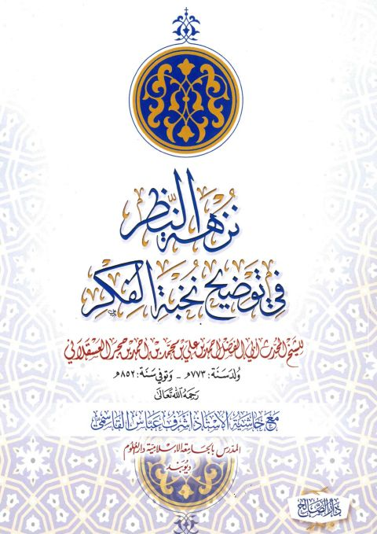

نزهة النظر في توضيح نخبة الفكر مع حاشية أشرف عباس القاسمي
Authors: أحمد بن علي بن حجر العسقلاني
Publishers: دار الصالح
Download Downloads need an internet connection.
- Published
- 1442هـ 2021م
- Country
- القاهرة، مصر
- Edition
- 1
- Volumes
- 1
- Pages
- 261
- Type
- كتاب
- Category
- الحديث وعلومه
Description
▫️ العنوان: نزهة النظر في توضيح نخبة الفكر مع حاشية أشرف عباس القاسمي ▪️ المؤلف: #أحمد_بن_علي_بن_حجر_العسقلاني ▫️ الناشر: #دار_الصالح ▪️ تاريخ النشر: 1442هـ 2021م ▫️ بلد النشر: القاهرة، #مصر ▪️ الطبعة: 1 ▫️ عدد الأجزاء: 1 ▪️ الصفحات: 261 ▫️ نوع الوعاء: #كتاب ▪️ التصنيف الرئيسي: #الحديث_وعلومه ۪